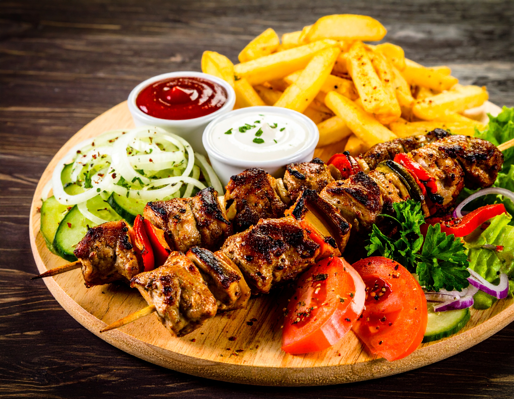

The world's best Iranian kebab recipe

Succulent, smoky, and packed with flavor — kebabs are a classic dish enjoyed around the world.
This recipe will guide you to make tender meat skewers with aromatic spices, perfect for a summer barbecue
or a cozy indoor grill session.
here are the ingredients :
ingredients
- 500g lamb or beef (cubed)
- 2 tbsp olive oil
- 1 tsp paprika
- 1 tsp cumin
- 1 tsp coriander powder
- 2 cloves garlic (minced)
- 1 tsp salt
- 1/2 tsp black pepper
- Wooden or metal skewers
Instructions
- Soak wooden skewers in water for 30 minutes (skip if using metal skewers).
- In a large bowl, mix olive oil, garlic, paprika, cumin, coriander, salt, and pepper.
- Add the meat cubes and coat well. Marinate for at least 1 hour (overnight for best flavor).
- Thread the meat onto skewers.
- Grill over medium-high heat for 8–10 minutes, turning occasionally, until cooked through.
- Serve hot with salad, bread, or rice.
back to Homepage